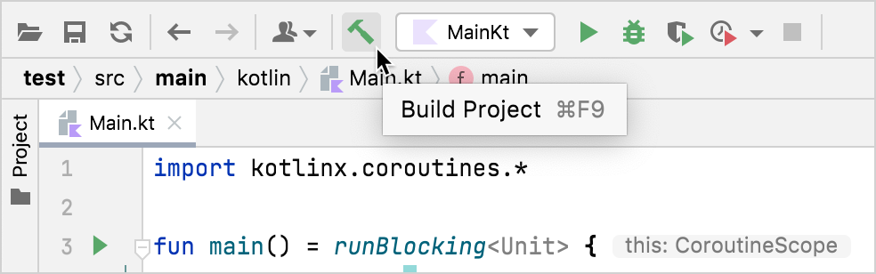
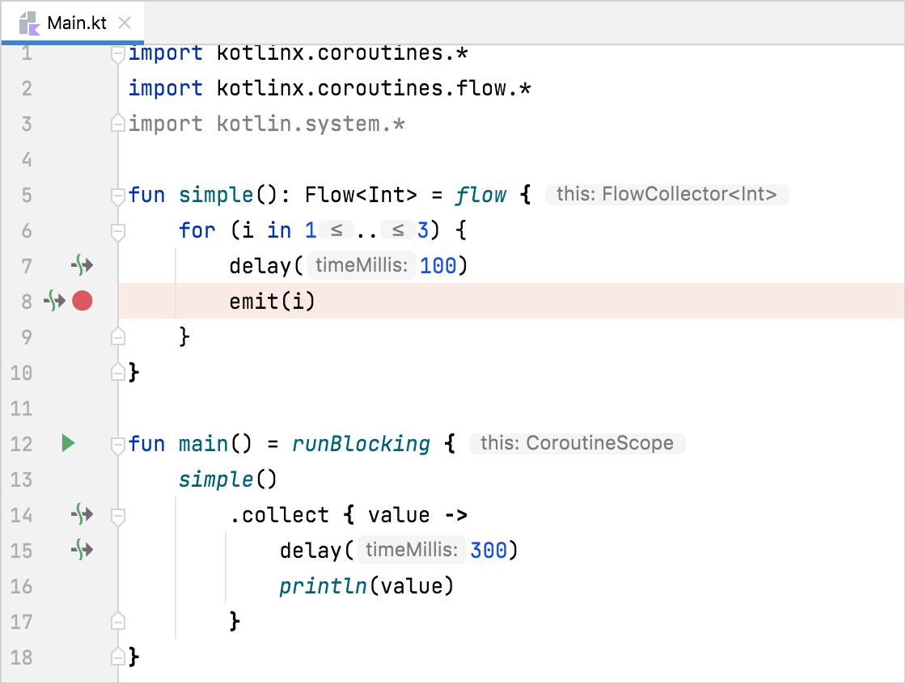
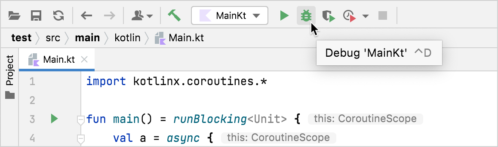
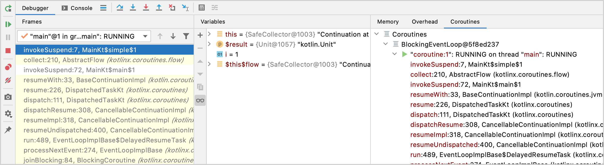

This tutorial demonstrates how to create Kotlin Flow and debug it using IntelliJ IDEA.
The tutorial assumes you have prior knowledge of the coroutines and flow concepts.
Create a Kotlin flow
Create a Kotlin flow with a slow emitter and a slow collector:
Open a Kotlin project in IntelliJ IDEA. If you don't have a project, create one.
-
To use the
kotlinx.coroutineslibrary in a Gradle project, add the following dependency tobuild.gradle(.kts):Kotlin
dependencies { implementation("org.jetbrains.kotlinx:kotlinx-coroutines-core:1.11.0") }Groovy
dependencies { implementation 'org.jetbrains.kotlinx:kotlinx-coroutines-core:1.11.0' }For other build systems, see instructions in the
kotlinx.coroutinesREADME. -
Open the
Main.ktfile insrc/main/kotlin.The
srcdirectory contains Kotlin source files and resources. TheMain.ktfile contains sample code that will printHello World!. -
Create the
simple()function that returns a flow of three numbers:Use the
delay()function to imitate CPU-consuming blocking code. It suspends the coroutine for 100 ms without blocking the thread.Produce the values in the
forloop using theemit()function.
import kotlinx.coroutines.* import kotlinx.coroutines.flow.* import kotlin.system.* fun simple(): Flow<Int> = flow { for (i in 1..3) { delay(100) emit(i) } } -
Change the code in the
main()function:Use the
runBlocking()block to wrap a coroutine.Collect the emitted values using the
collect()function.Use the
delay()function to imitate CPU-consuming code. It suspends the coroutine for 300 ms without blocking the thread.Print the collected value from the flow using the
println()function.
fun main() = runBlocking { simple() .collect { value -> delay(300) println(value) } } -
Build the code by clicking Build Project.

Debug the coroutine
-
Set a breakpoint at the line where the
emit()function is called:
-
Run the code in debug mode by clicking Debug next to the run configuration at the top of the screen.

The Debug tool window appears:
The Frames tab contains the call stack.
The Variables tab contains variables in the current context. It tells us that the flow is emitting the first value.
The Coroutines tab contains information on running or suspended coroutines.

-
Resume the debugger session by clicking Resume Program in the Debug tool window. The program stops at the same breakpoint.

Now the flow emits the second value.

Optimized-out variables
If you use suspend functions, in the debugger, you might see the "was optimized out" text next to a variable's name:

This text means that the variable's lifetime was decreased, and the variable doesn't exist anymore. It is difficult to debug code with optimized variables because you don't see their values. You can disable this behavior with the -Xdebug compiler option.
Add a concurrently running coroutine
Open the
Main.ktfile insrc/main/kotlin.-
Enhance the code to run the emitter and collector concurrently:
Add a call to the
buffer()function to run the emitter and collector concurrently.buffer()stores emitted values and runs the flow collector in a separate coroutine.
fun main() = runBlocking<Unit> { simple() .buffer() .collect { value -> delay(300) println(value) } } Build the code by clicking Build Project.
Debug a Kotlin flow with two coroutines
Set a new breakpoint at
println(value).-
Run the code in debug mode by clicking Debug next to the run configuration at the top of the screen.

The Debug tool window appears.
In the Coroutines tab, you can see that there are two coroutines running concurrently. The flow collector and emitter run in separate coroutines because of the
buffer()function. Thebuffer()function buffers emitted values from the flow. The emitter coroutine has the RUNNING status, and the collector coroutine has the SUSPENDED status. -
Resume the debugger session by clicking Resume Program in the Debug tool window.

Now the collector coroutine has the RUNNING status, while the emitter coroutine has the SUSPENDED status.
You can dig deeper into each coroutine to debug your code.